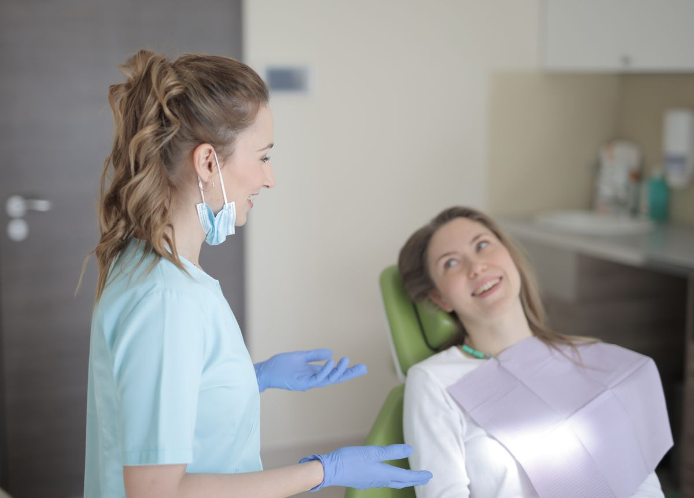
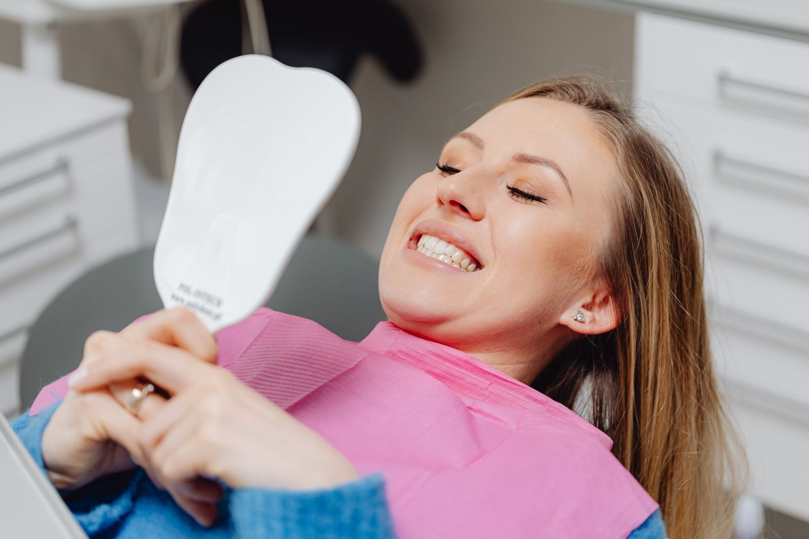

ODONTOLOGIA COM UM OLHAR HUMANO
Seu sorriso.
Seu tempo.
Seu novo começo.
Cuidar do seu sorriso pode ser leve.
Um encontro entre atenção, confiança e o cuidado que faz sentido para você.
Atendimento humanizado
Odontologia acessível
Atendimento
humanizado
Escuta antes de qualquer cuidado.
Acessibilidade
Uma conversa aberta sobre suas possibilidades.
Cuidado
personalizado
Cada sorriso tem a sua história.
Experiência
do paciente
Atenção aos detalhes, em cada etapa.

NOSSO JEITO DE CUIDAR
Antes de cuidar
do seu sorriso,
queremos ouvir você.
Suas dúvidas, sua rotina, suas expectativas. Tudo isso faz parte da conversa.
Na Soridents, a proposta é tornar o cuidado mais próximo: com orientação clara e espaço para você participar de cada escolha.
Vamos dar o primeiro passo? Mais escuta. Mais cuidado. Mais você.POSSIBILIDADES PARA O SEU SORRISO
O cuidado certo.
Para o seu momento.
Prevenção
e cuidado
Um olhar atento à saúde bucal, com orientações para o seu dia a dia.
Estética
do sorriso
Uma conversa sobre harmonia, naturalidade e o que faz você sorrir.
Alinhamento
dental
Planejamento individual para cuidar do alinhamento e da função do seu sorriso.
Reabilitação
oral
Possibilidades para recuperar conforto e função, conforme avaliação profissional.

A EXPERIÊNCIA COMEÇA AQUI
A experiência
começa antes mesmo
da consulta.
Um atendimento pensado para acolher, orientar e cuidar de você desde o primeiro contato.
Fale com a SoridentsUM NOVO COMEÇO PODE SER SIMPLES
Vamos cuidar
do seu sorriso?
Traga suas perguntas. O primeiro passo é uma conversa.
Agendar atendimento No seu tempo. Do seu jeito.